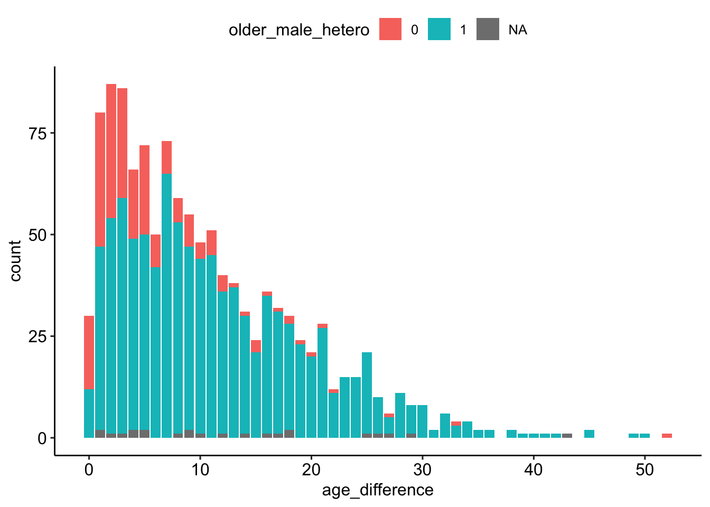
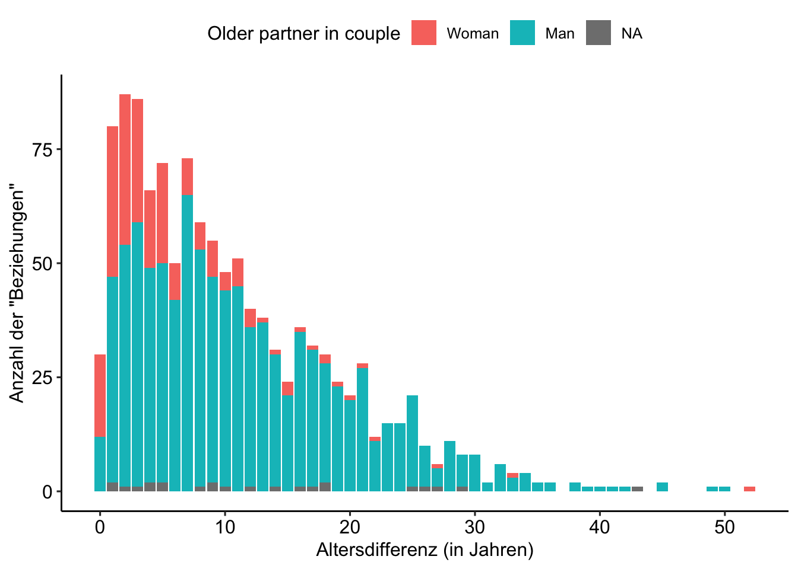

pacman::p_load(
here,
magrittr,
tidyverse,
janitor,
easystats,
sjmisc,
ggpubr)Exercise: Hollywood Age Gaps
Session 03 - 🔨 Working with R
 Link to slides
Link to slides
Ziel der Anwendung: Grundlagen der Datenexploration in R
- Auffrischung der Grundkenntnisse im Umgang mit R, tidyverse und ggplot2
- Nützliche Funktionen aus dem
easystats-verse kennenlernen
Background
Todays’s data basis: Hollywood Age Gaps
An informational site showing the age gap between movie love interests.
The data follows certain rules:
- The two (or more) actors play actual love interests (not just friends, coworkers, or some other non-romantic type of relationship)
- The youngest of the two actors is at least 17 years old
- Not animated characters
- The best way to learn R is by trying. This document tries to display a version of the “normal” data processing procedure.
- Use
tidytuesdaydata as an example to showcase the potential
Preparation
Packages
The pacman::p_load() package is used to load the packages, which has several advantages over the conventional method with library():
- Concise syntax
- Automatic installation (if the package is not already installed)
- Loading multiple packages at once
- Automatic search for dependencies
Import und Vorverarbeitung der Daten
| Variable | Description |
|---|---|
movie_name |
Name of the film |
release_year |
Release year |
director |
Director of the film |
age_difference |
Age difference between the characters in whole years |
couple_number |
An identifier for the couple in case multiple couples are listed for this film |
actor_1_name |
The name of the older actor in this couple |
actor_2_name |
The name of the younger actor in this couple |
actor_1_birthdate |
The birthdate of the older member of the couple |
actor_2_birthdate |
The birthdate of the younger member of the couple |
actor_1_age |
The age of the older actor when the film was released |
actor_2_age |
The age of the younger actor when the film was released |
# Import data from URL
age_gaps <- read_csv("http://hollywoodagegap.com/movies.csv") %>%
janitor::clean_names()# Correct data
age_gaps_correct <- age_gaps %>%
mutate(
across(ends_with("_birthdate"), ~as.Date(.)) # set dates to dates
)🛠️ Praktische Übung
Achtung, bitte lesen!
- Bevor Sie mit der Arbeit an den folgenden 📋 Exercises beginnen, stellen Sie bitte sicher, dass Sie alle Chunks des Abschnitts Preparation ausgeführt haben. Das können Sie tun, indem Sie den “Run all chunks above”-Knopf
 des nächsten Chunks benutzen.
des nächsten Chunks benutzen. - Bei Fragen zum Code lohnt sich ein Blick in das Tutorial (.qmd oder .html). Beim Tutorial handelt es sich um eine kompakte Darstellung des in der Präsentation verwenden R-Codes. Sie können das Tutorial also nutzen, um sich die Code-Bausteine anzusehen, die für die R-Outputs auf den Slides benutzt wurden.
🔎 Welche Rolle spielt das Geschlecht?
Spielt das Geschlecht eine Rolle?
- Der folgende Abschitt befasst sich nun ergänzend mit der Frage, welche Rolle das Geschlecht mit Blick auf die “Gültigkeit” der vorherigen Ergebnisse spielt
- Dazu sind jedoch weitere Explorations- und Überarbeitungsschritte notwendig
📋 Exercise 1: Übeprüfung der _gender-Variablen
Arbeitsauftrag 1.1
Nutzen Sie die Funktion sjmisc::frq() und schauen Sie sich im Datensatz age_gaps_correct die Variablen actor_1_gender und actor_2_gender an.
age_gaps_correct %>%
sjmisc::frq(actor_1_gender, actor_2_gender)actor_1_gender <character>
# total N=1199 valid N=1199 mean=1.01 sd=0.11
Value | N | Raw % | Valid % | Cum. %
---------------------------------------
man | 1184 | 98.75 | 98.75 | 98.75
woman | 15 | 1.25 | 1.25 | 100.00
<NA> | 0 | 0.00 | <NA> | <NA>
actor_2_gender <character>
# total N=1199 valid N=1199 mean=1.99 sd=0.11
Value | N | Raw % | Valid % | Cum. %
---------------------------------------
man | 16 | 1.33 | 1.33 | 1.33
woman | 1183 | 98.67 | 98.67 | 100.00
<NA> | 0 | 0.00 | <NA> | <NA>
Arbeitsauftrag 1.2
Nutzen Sie die Funktion sjmisc::flat_talbe() und den Datensatz age_gaps_correct um eine Kreuztabelle der Variablen actor_1_gender und actor_2_gender zu erstellen.
age_gaps_correct %>%
select(actor_1_gender, actor_2_gender) %>%
sjmisc::flat_table() actor_2_gender man woman
actor_1_gender
man 12 1172
woman 4 11🔎 Sind die Daten “konsistent”?
Überprüfung der Sortierung
age_gaps_correct %>%
summarise(
p1_older = mean(actor_1_age > actor_2_age), # older person first?
p1_male = mean(actor_1_gender == "man"), # male person first?
p_1_first_alpha = mean(actor_1_name < actor_2_name) # alphabetical order?
)# A tibble: 1 × 3
p1_older p1_male p_1_first_alpha
<dbl> <dbl> <dbl>
1 0.813 0.987 0.495Überprüfung der Anzahl pro Paare pro Film
# Create data
couples <- age_gaps_correct %>%
group_by(movie_name) %>%
summarise(n = n())
# Distribution
couples %>% frq(n)n <integer>
# total N=864 valid N=864 mean=1.39 sd=0.75
Value | N | Raw % | Valid % | Cum. %
--------------------------------------
1 | 629 | 72.80 | 72.80 | 72.80
2 | 162 | 18.75 | 18.75 | 91.55
3 | 54 | 6.25 | 6.25 | 97.80
4 | 14 | 1.62 | 1.62 | 99.42
5 | 3 | 0.35 | 0.35 | 99.77
6 | 1 | 0.12 | 0.12 | 99.88
7 | 1 | 0.12 | 0.12 | 100.00
<NA> | 0 | 0.00 | <NA> | <NA># Movies with a loot of couples
couples %>%
filter(n > 3) %>%
arrange(desc(n))# A tibble: 19 × 2
movie_name n
<chr> <int>
1 Love Actually 7
2 The Family Stone 6
3 A View to a Kill 5
4 He's Just Not That Into You 5
5 Mona Lisa Smile 5
6 A Star Is Born 4
7 American Pie 4
8 Boogie Nights 4
9 Book Club 4
10 Closer 4
11 Pushing Tin 4
12 Sex and the City 4
13 Soul Food 4
14 Tag 4
15 The Favourite 4
16 The Girl on the Train 4
17 The Other Woman 4
18 Tomorrow Never Dies 4
19 Twilight 4Korrekturen
age_gaps_consistent <- age_gaps_correct %>%
# If multiple couples, assign couple number by movie
mutate(
couple_number = row_number(),
.by = "movie_name"
) %>%
# Change data structure (one line per actor in a coulpe of a movie)
pivot_longer(
cols = starts_with(c("actor_1_", "actor_2_")),
names_to = c(NA, NA, ".value"),
names_sep = "_"
) %>%
# Put older actor first
arrange(desc(age_difference), movie_name, birthdate) %>%
mutate(
position = row_number(),
.by = c("movie_name", "couple_number")
) %>%
pivot_wider(
names_from = "position",
names_glue = "actor_{position}_{.value}",
values_from = c("name", "gender", "birthdate", "age")
) %>%
mutate(
couple_structure = case_when(
actor_1_gender == "woman" & actor_2_gender == "woman" ~ 1,
actor_1_gender == "man" & actor_2_gender == "man" ~ 2,
actor_1_gender != "man" ~ 3,
actor_1_gender == "man" ~ 4,
),
older_male_hetero = sjmisc::rec(
couple_structure,
rec="3=0; 4=1; ELSE=NA",
to.factor = TRUE
)
)🔎 Die zweite Datenexploration
📋 Exercise 2: Alterskombinationen im Überblick
Arbeitauftrag 2
Nutzen Sie die Funktion sjmisc::frq() und schauen Sie sich im Datensatz age_gaps_consistent die Variablen couple_structure und older_male_hetero an.
age_gaps_consistent %>%
frq(couple_structure, older_male_hetero)couple_structure <numeric>
# total N=1199 valid N=1199 mean=3.78 sd=0.50
Value | N | Raw % | Valid % | Cum. %
--------------------------------------
1 | 11 | 0.92 | 0.92 | 0.92
2 | 12 | 1.00 | 1.00 | 1.92
3 | 210 | 17.51 | 17.51 | 19.43
4 | 966 | 80.57 | 80.57 | 100.00
<NA> | 0 | 0.00 | <NA> | <NA>
older_male_hetero <categorical>
# total N=1199 valid N=1176 mean=0.82 sd=0.38
Value | N | Raw % | Valid % | Cum. %
--------------------------------------
0 | 210 | 17.51 | 17.86 | 17.86
1 | 966 | 80.57 | 82.14 | 100.00
<NA> | 23 | 1.92 | <NA> | <NA>📋 Exercise 3: Wie sind die Altersunterschiede unterteilt, unter Berücksichtiung des Geschlechts?
Arbeitsauftrag 3.1 (graphische Überprüfung)
- Erstellen Sie, auf Basis des Datensatzes
age_gaps_consistent, einenggplot. - Nutzen Sie im Argument
aes()die Variableage_differencealsx-Variable undolder_male_heterofür das Argumentfill. - Nutzen Sie
geom_barzur Erzeugung des Plots. - Optional: Verwenden Sie
theme_pubr
# Simple
age_gaps_consistent %>%
ggplot(aes(age_difference, fill = older_male_hetero)) +
geom_bar() +
theme_pubr()
# Detailed
age_gaps_consistent %>%
ggplot(aes(age_difference, fill = older_male_hetero)) +
geom_bar() +
labs(
x = "Altersdifferenz (in Jahren)",
y = 'Anzahl der "Beziehungen"'
) +
scale_fill_manual(
name = "Older partner in couple",
values = c("0" = "#F8766D", "1" = "#00BFC4", "NA" = "grey"),
labels = c("0" = "Woman", "1" = "Man", "NA" = "Same sex couples")
) +
theme_pubr() 
Arbeitsauftrag 3.2 (Überprüfung durch Modellierung)
- Erstellen Sie ein lineares Modell (
lm), das die Variableage_differenceals abhängige Variable und die Variablenrelease_yearundolder_male_heteroals unabhängige Variablen verwendet. Nutzen Sie dazu den Datensatzage_gaps_consistent. - Geben Sie die Parameter des Modells mit der Funktion
parameters::parameters()aus. - Bewerten Sie die Modellleistung mit der Funktion
performance::model_performance(). - Erstellen Sie einen Bericht über das Modell mit der Funktion
report::report().
mdl <- lm(age_difference ~ release_year + older_male_hetero, data = age_gaps_consistent)
# Output
mdl %>% parameters::parameters()Parameter | Coefficient | SE | 95% CI | t(1173) | p
---------------------------------------------------------------------------------
(Intercept) | 202.27 | 27.53 | [148.25, 256.29] | 7.35 | < .001
release year | -0.10 | 0.01 | [ -0.13, -0.07] | -7.16 | < .001
older male hetero [1] | 6.11 | 0.61 | [ 4.90, 7.32] | 9.94 | < .001mdl %>% performance::model_performance()# Indices of model performance
AIC | AICc | BIC | R2 | R2 (adj.) | RMSE | Sigma
------------------------------------------------------------------
8236.693 | 8236.727 | 8256.972 | 0.127 | 0.125 | 8.002 | 8.012mdl %>% report::report()We fitted a linear model (estimated using OLS) to predict age_difference with
release_year and older_male_hetero (formula: age_difference ~ release_year +
older_male_hetero). The model explains a statistically significant and weak
proportion of variance (R2 = 0.13, F(2, 1173) = 85.10, p < .001, adj. R2 =
0.13). The model's intercept, corresponding to release_year = 0 and
older_male_hetero = 0, is at 202.27 (95% CI [148.25, 256.29], t(1173) = 7.35, p
< .001). Within this model:
- The effect of release year is statistically significant and negative (beta =
-0.10, 95% CI [-0.13, -0.07], t(1173) = -7.16, p < .001; Std. beta = -0.20, 95%
CI [-0.25, -0.14])
- The effect of older male hetero [1] is statistically significant and positive
(beta = 6.11, 95% CI [4.90, 7.32], t(1173) = 9.94, p < .001; Std. beta = 0.71,
95% CI [0.57, 0.85])
Standardized parameters were obtained by fitting the model on a standardized
version of the dataset. 95% Confidence Intervals (CIs) and p-values were
computed using a Wald t-distribution approximation.